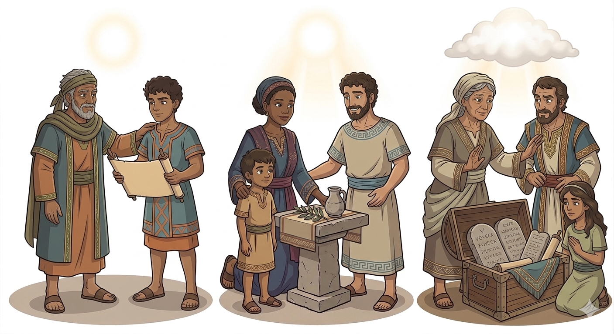
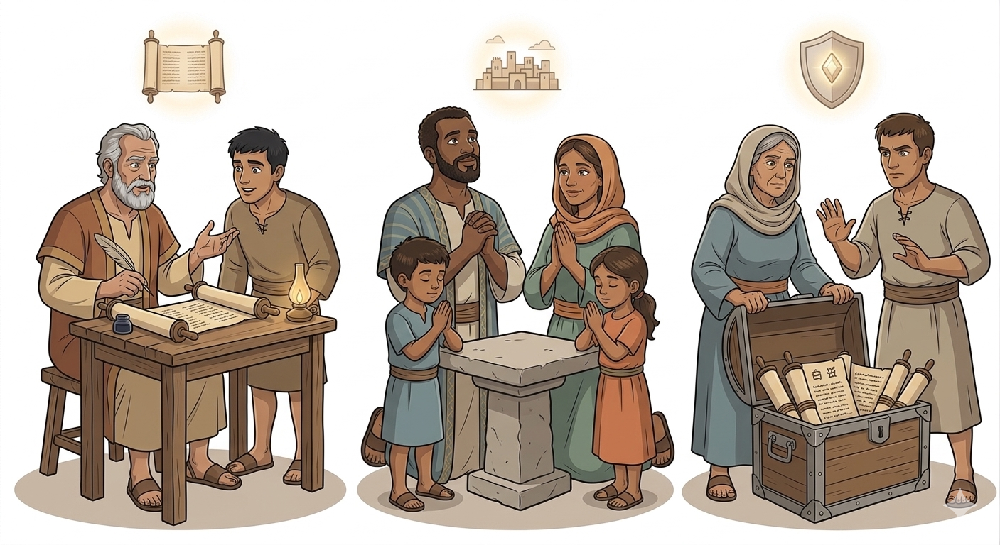
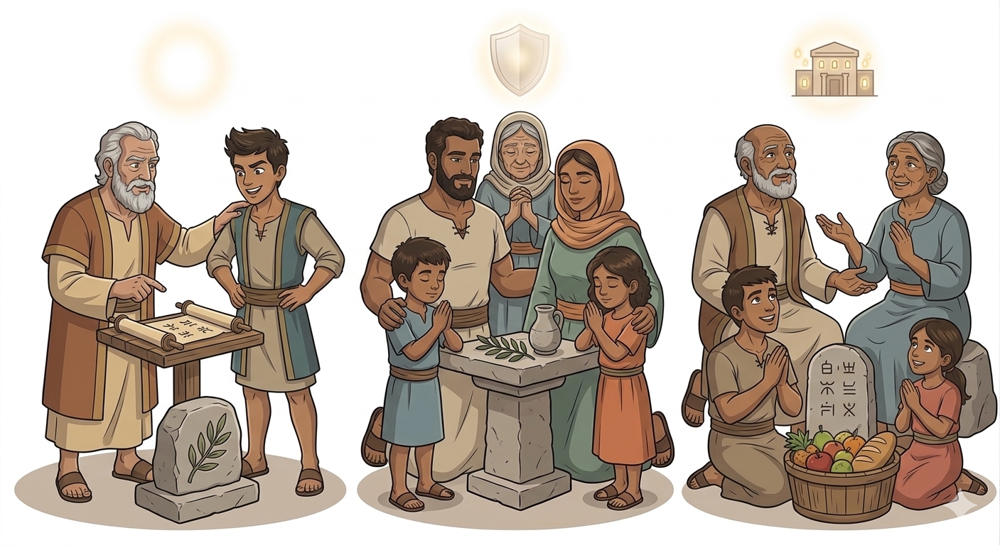
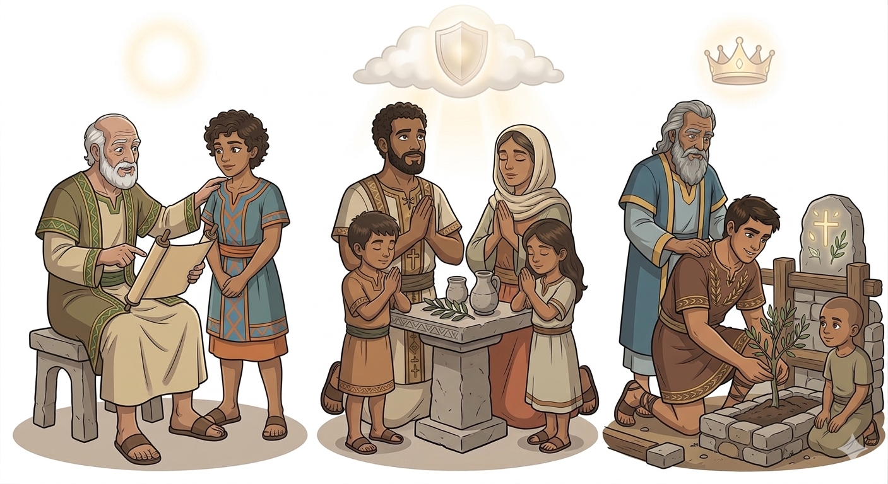
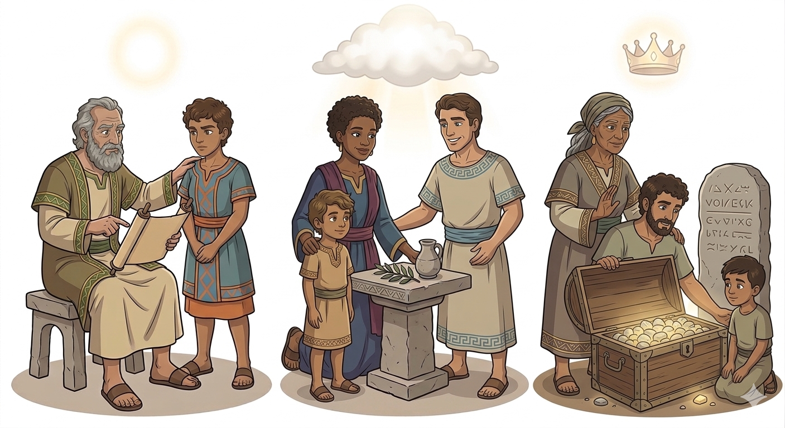

Conselhos de Sabedoria para Jovens Líderes — Um Resumo Visual para Crianças
Não importa se você é jovem ou pequenino,
Deus pode te usar de um jeito divino!
Com coragem e fé, você pode liderar,
E o amor de Jesus ao mundo levar!
📖 "Ninguém despreze a tua mocidade" — 1 Timóteo 4:12
Um líder de verdade serve com o coração,
Não busca poder, mas a transformação.
Com palavras gentis e exemplo de luz,
Mostra aos outros o caminho de Jesus!
📖 "Sê exemplo dos fiéis" — 1 Timóteo 4:12
A Palavra de Deus é um tesouro precioso,
Guarde-a no peito, com zelo amoroso!
Ensine a verdade com pureza e candura,
E a igreja crescerá forte e segura!
📖 "Guarda o bom depósito" — 1 Timóteo 6:20
Paulo era um apóstolo experiente que amava Jesus de todo coração. Ele viajava pelo mundo ensinando sobre Jesus e cuidando das igrejas.
Timóteo era um jovem discípulo que Paulo chamava de "meu verdadeiro filho na fé". Mesmo sendo jovem, ele tinha um coração puro e desejava servir a Deus com dedicação!

📝 Uma Carta Especial: Paulo escreveu esta carta para dar conselhos sábios a Timóteo sobre como liderar a igreja de Éfeso.
⛪ Como Cuidar da Igreja: Ele ensinou sobre como escolher líderes sábios, como orar, como ensinar a verdade e como viver com pureza.
💎 Conselhos Preciosos: Paulo alertou sobre falsos mestres e ensinou que o amor verdadeiro vem de um coração puro e fé sincera.
🌟 Encorajamento: Mesmo sendo jovem, Timóteo poderia ser um grande exemplo de fé, amor e pureza para todos!
👨🏫 Líderes Servem com Amor: Este livro nos ensina que liderar não é mandar, mas servir com amor e exemplo. Um bom líder cuida das pessoas como Jesus cuidou!
💪 Idade Não Importa: Timóteo era jovem, mas Paulo mostrou que Deus pode usar qualquer pessoa — não importa a idade — que tenha fé e um coração puro!
📖 A Verdade é Preciosa: Devemos guardar e ensinar a Palavra de Deus com cuidado, protegendo-a de ensinamentos falsos.
❤️ Viva com Pureza: Nossas palavras, ações e pensamentos devem refletir o amor de Jesus para que outros vejam a luz de Deus em nós!


Paulo escreveu esta carta para ensinar Timóteo — e todos nós — sobre como cuidar bem do povo de Deus. É como um manual de instruções para líderes da igreja!
✅ Escolher líderes sábios que amam a Deus de verdade
✅ Orar sempre por todos, em todo tempo
✅ Ensinar a verdade da Palavra de Deus
✅ Viver com pureza e ser exemplo de fé
✅ Cuidar das pessoas com amor e sabedoria
🌟 O propósito é simples: ajudar a igreja a crescer forte, saudável e cheia do amor de Jesus!
Quando Paulo escreveu esta carta, Timóteo era considerado muito jovem para ser líder. Algumas pessoas até duvidavam dele por causa da idade!
Mas Paulo o chamava carinhosamente de "meu verdadeiro filho na fé"! Isso mostra o amor especial que Paulo tinha por Timóteo, como um pai ama seu filho.
🌟 Paulo ensinou que idade não importa quando você tem fé, amor e um coração puro! Deus pode usar crianças, jovens e adultos — todos são importantes no Reino de Deus!
💙 Você também pode ser usado por Deus, não importa sua idade!

© 2025 - Trilho Kids
Desenvolvido com ❤️ para crianças